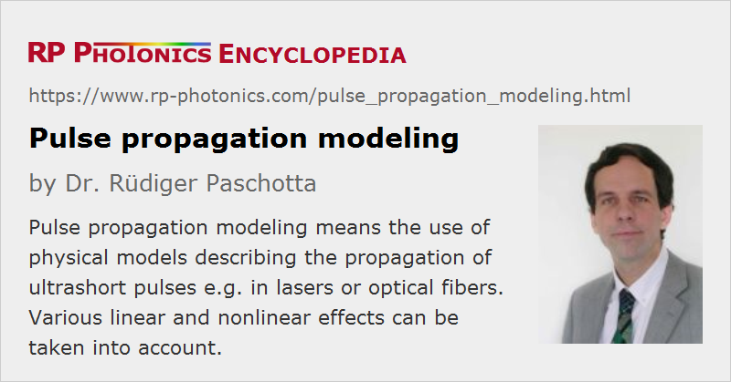

Pulse Propagation Modeling
Definition: working with physical models describing the propagation of ultrashort pulses e.g. in lasers or optical fibers
German: Modellierung der Pulsausbreitung
Categories: light pulses, methods, physical foundations
How to cite the article; suggest additional literature
Author: Dr. Rüdiger Paschotta
When propagating in transparent optical media, the properties of ultrashort pulses can undergo complicated changes. Typical physical effects influencing pulses are:
- Chromatic dispersion can lead to dispersive pulse broadening, but also to pulse compression, generation of a chirp, etc.
- Various nonlinearities can become relevant at high peak powers. For example, the Kerr effect can cause self-phase modulation, and Raman scattering may e.g. induce Raman gain within the pulse spectrum (Raman self-frequency shift).
- Optical gain and losses can modify the pulse energy and the spectral shape.
- The spatial properties can change due to linear effects such as diffraction and waveguiding, but also due to nonlinear effects such as self-focusing. In highly nonlinear interactions, filamentation may occur.
Of course, different effects can act simultaneously, and often interact in surprising ways. For example, chromatic dispersion and Kerr nonlinearity can lead to soliton effects.
Relevance of Pulse Propagation Effects
Pulse propagation effects as mentioned above are relevant in various kinds of situations. Some examples are:
- Details of the propagation of ultrashort pulses in a mode-locked laser determine the steady-state pulse properties such as pulse duration, bandwidth and chirp, or the stability of pulse generation, multiple pulsing, etc.
- The propagation in fibers is relevant e.g. for pulse amplification, pulse compression and supercontinuum generation, and in optical fiber communications.
- Nonlinear frequency conversion of ultrashort pulses can lead to complicated changes of pulse shapes. In addition to the nonlinear interaction, there can be influences from effects such as temporal spatial walk-off and dispersive broadening.
Techniques for Modeling of Pulse Propagation
Depending on the situation, different kinds of physical modeling techniques are required. Some of the most important ones are shortly described in the following:
- The Haus Master equation is an analytical tool mainly for calculating the steady-state pulse properties obtained in mode-locked lasers. It can be seen as a generalization of the nonlinear Schrödinger equation.
- Soliton perturbation theory describes the propagation of soliton pulses which can be subject to gain or loss, spectral filtering, etc. A number of dynamic equations describe the evolution of the basic parameters of solitons under the influence of various effects. Also, the so-called continuum is included, i.e. a temporally broad background radiation with which a soliton can interact. Soliton perturbation theory can be used, e.g., to describe the generation of Kelly sidebands.
- Models based on second-order moments of the complex electric field of a pulse [5] can also greatly reduce the number of dynamic variables. However, they are applicable only as long as the pulse shapes remain relatively simple. A difficulty is that it is not always obvious where the parameter region with a reasonable accuracy ends. The advantage of a significantly faster computation (compared with a full numerical simulation) becomes less important as the power of computers is increasing.
- Numerical techniques are available for simulating pulse propagation in more general cases. A straightforward approach applicable e.g. to mode-locked lasers describes a short pulse with an array of complex amplitudes in the time or frequency domain. Linear effects such as dispersion are easily treated in the frequency domain, whereas nonlinear interactions are often (but not always) more conveniently handled in the time domain. As required, switching between both domains can be done with a fast Fourier transform algorithm (FFT techniques).
- A special case is the symmetrized split-step Fourier method, used particularly for pulse propagation in fibers [9]. The (weak) dispersive and nonlinear effects corresponding to short fiber pieces are alternately applied. The numerical errors associated with the finite longitudinal step size can be minimized with a special symmetrization technique, which allows for higher accuracies without excessively increased computation times. Automatic step size control can be very important for computational efficiency.
- Still more refined techniques take into account the transverse spatial variation as well. They can be used, e.g., to investigate Kerr lens mode locking or filamentation phenomena.
- For propagation in multimode waveguides, it is often advantageous to describe the optical field as a superposition of propagation modes, which can be coupled e.g. via nonlinearities.
By applying statistical techniques, pulse propagation models can also be used to investigate noise phenomena [7].
Suppliers
The RP Photonics Buyer's Guide contains 5 suppliers for pulse propagation modeling software. Among them:
Questions and Comments from Users
Here you can submit questions and comments. As far as they get accepted by the author, they will appear above this paragraph together with the author’s answer. The author will decide on acceptance based on certain criteria. Essentially, the issue must be of sufficiently broad interest.
Please do not enter personal data here; we would otherwise delete it soon. (See also our privacy declaration.) If you wish to receive personal feedback or consultancy from the author, please contact him e.g. via e-mail.
By submitting the information, you give your consent to the potential publication of your inputs on our website according to our rules. (If you later retract your consent, we will delete those inputs.) As your inputs are first reviewed by the author, they may be published with some delay.
Bibliography
| [1] | P. V. Mamyshev and S. V. Chernikov, “Ultrashort-pulse propagation in optical fibers”, Opt. Lett. 15 (19), 1076 (1990), doi:10.1364/OL.15.001076 |
| [2] | G. P. Agrawal, “Optical pulse propagation in doped fiber amplifiers”, Phys. Rev. A 44 (11), 7493 (1991), doi:10.1103/PhysRevA.44.7493 |
| [3] | H. A. Haus et al., “Structures for additive pulse mode locking”, J. Opt. Soc. Am. B 8 (10), 2068 (1991), doi:10.1364/JOSAB.8.002068 |
| [4] | P. L. François, “Nonlinear propagation of ultrashort pulses in optical fibers: total field formulation in the frequency domain”, J. Opt. Soc. Am. B 8 (2), 276 (1991), doi:10.1364/JOSAB.8.000276 |
| [5] | M. Potasek et al., “Analytic and numerical study of pulse broadening in nonlinear dispersive fibers”, J. Opt. Soc. Am. B 3 (2), 205 (1992), doi:10.1364/JOSAB.3.000205 |
| [6] | D. Marcuse, “RMS width of pulses in nonlinear dispersive fibers”, IEEE J. Lightwave Technol. 10 (1), 17 (1992), doi:10.1109/50.108730 |
| [7] | R. Paschotta, “Noise of mode-locked lasers. Part I: numerical model”, Appl. Phys. B 79, 153 (2004); R. Paschotta, “Noise of mode-locked lasers. Part II: timing jitter and other fluctuations”, Appl. Phys. B 79, 163 (2004), doi:10.1007/s00340-004-1548-9 |
| [8] | B. Burgoyne et al., “Nonlinear pulse propagation in optical fibers using second order moments”, Opt. Express 15 (16), 10075 (2007), doi:10.1364/OE.15.010075 |
| [9] | G. P. Agrawal, Nonlinear Fiber Optics, 4th edn., Academic Press, New York (2007) |
| [10] | R. Paschotta, tutorial on "Passive Fiber Optics" |
| [11] | R. Paschotta, tutorial on "Passive Fiber Optics", Part 12: Ultrashort Pulses and Signals in Fibers |
| [12] | R. Paschotta, tutorial on "Modeling of Fiber Amplifiers and Lasers", part 7 |
See also: dispersion, nonlinearities, nonlinear pulse distortion, pulse compression, double pulses, parabolic pulses, supercontinuum generation, Haus Master equation
and other articles in the categories light pulses, methods, physical foundations

This encyclopedia is authored by Dr. Rüdiger Paschotta, the founder and executive of RP Photonics Consulting GmbH. How about a tailored training course from this distinguished expert at your location? Contact RP Photonics to find out how his technical consulting services (e.g. product designs, problem solving, independent evaluations, training) and software could become very valuable for your business!
|  |
If you like this page, please share the link with your friends and colleagues, e.g. via social media:
These sharing buttons are implemented in a privacy-friendly way!